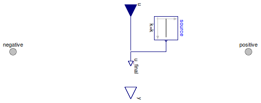

Table of Contents
- User's Guide
- Conditions
- Assemblies
- Regions
- Subregions
- Connectors
- Characteristics
- Units
- Quantities
- BaseClasses
Download
- Latest: FCSys-2.0.zip (**Please check back soon or contact kdavies4 at gmail.com.)

| Name | Description |
|---|---|
| Temperature | Impose temperature (measure heat flow rate) |
| HeatRate | Impose heat flow rate (measure temperature) |
| Custom | Apply condition to a custom expression |
| Base classes (not for direct use) |

| Type | Name | Default | Description |
|---|---|---|---|
| ConditionType | conditionType | BaseClasses.ConditionType.Te... | Type of condition |
| Imposition | |||
| Boolean | internal | true | Use internal condition |
| Constant | source | redeclare Modelica.Blocks.So... | Source of internal condition |
| Type | Name | Description |
|---|---|---|
| Face | negative | Negative-side connector |
| Face | positive | Positive-side connector |
model Temperature "Impose temperature (measure heat flow rate)" extends Thermal.BaseClasses.PartialCondition( final conditionType=BaseClasses.ConditionType.Temperature, u(final unit="l2.m/(N.T2)", displayUnit="K"), final y(unit="l2.m/T3") = face.Qdot); equation face.T = u_final;end Temperature;
| Type | Name | Default | Description |
|---|---|---|---|
| ConditionType | conditionType | BaseClasses.ConditionType.He... | Type of condition |
| Imposition | |||
| Boolean | internal | true | Use internal condition |
| Constant | source | redeclare Modelica.Blocks.So... | Source of internal condition |
| Type | Name | Description |
|---|---|---|
| Face | negative | Negative-side connector |
| Face | positive | Positive-side connector |
model HeatRate "Impose heat flow rate (measure temperature)" extends Thermal.BaseClasses.PartialCondition( final conditionType=BaseClasses.ConditionType.HeatRate, u(final unit="l2.m/T3"), final y( final unit="l2.m/(N.T2)", displayUnit="K") = face.T); equation face.Qdot = u_final;end HeatRate;
The expression to which the condition is applied (x)
must involve face.T and/or face.Qdot.
Extends from BaseClasses.PartialCondition (Partial model for a thermal condition).
| Type | Name | Default | Description |
|---|---|---|---|
| ConditionType | conditionType | BaseClasses.ConditionType.Cu... | Type of condition |
| Imposition | |||
| Boolean | internal | true | Use internal condition |
| Constant | source | redeclare Modelica.Blocks.So... | Source of internal condition |
| Real | x | face.T | Expression to which the condition is applied |
| Measurement | |||
| RealOutput | y | face.Qdot | Expression of measurement |
| Type | Name | Description |
|---|---|---|
| input RealInput | u | Value of imposed condition |
| Face | negative | Negative-side connector |
| Face | positive | Positive-side connector |
| Measurement | ||
| output RealOutput | y | Expression of measurement |
model Custom "Apply condition to a custom expression" extends BaseClasses.PartialCondition(final conditionType=BaseClasses.ConditionType.Custom, y=face.Qdot); Real x=face.T "Expression to which the condition is applied"; equation x = u_final;end Custom;